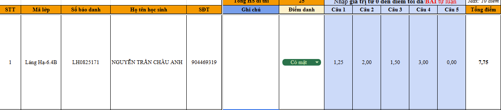

Tháng 9 - 2026
Rà soát sai sót kiến thức, tiến độ chương trình, phân bổ thời gian giảng dạy và tác phong sư phạm.
Kế hoạch phân phối chương trình chi tiết Tháng 9 & Tháng 10 theo từng phân lớp (Chuyên, Nâng cao, Mở rộng, Cơ bản).
Hệ thống hóa chuyên đề Số học 6 (Số nguyên tố, ƯCLN, BCNN, Số nguyên) và phương pháp 4 bài toán then chốt.
Tổ chức khảo sát định kỳ Quý I (Tuần 11), giao diện nhập điểm chuẩn và bảng nhận xét mẫu theo từng dạng bài.
Dành thời lượng trao đổi, tháo gỡ vướng mắc giảng dạy thực tế và tiếp thu đề xuất của các Thầy Cô.
| Thời gian | Buổi | Phiếu số 1 (Định hướng chuyên) | Phiếu số 2 (Nâng cao) | Phiếu số 3 + 4 (Mở rộng & Cơ bản) | |
|---|---|---|---|---|---|
| Tháng 9 | 14/9 - 20/9 | 11 | Ước và bội | Phân tích một số ra thừa số nguyên tố. Ước và bội | Số nguyên tố - Hợp số |
| 21/9 - 27/9 | 12 | Kiểm tra quý 1 | Kiểm tra quý 1 | Kiểm tra quý 1 | |
| Tháng 10 | 05/10 - 11/10 | 14 | Số nguyên tố - Hợp số (Buổi 1) | Số nguyên tố - Hợp số (Buổi 1) | Luyện tập SNT - HS. Phân tích một số ra thừa số nguyên tố |
| 12/10 - 18/10 | 15 | Số nguyên tố - Hợp số (Buổi 2) | Số nguyên tố - Hợp số (Buổi 2) | Ước chung - ƯCLN | |
| 19/10 - 25/10 | 16 | ƯCLN và BCNN | ƯCLN và BCNN | Bội chung - BCNN | |
| 26/10 - 01/11 | 17 | ƯCLN và BCNN (tiếp) | ƯCLN và BCNN (tiếp) | Ôn tập ước và bội | |
Toàn bộ các phân lớp tập trung hoàn thiện mảng kiến thức nền tảng Số học: Số nguyên tố – Hợp số, Phân tích thừa số nguyên tố, Ước chung & ƯCLN, Bội chung & BCNN. Đề nghị GV theo dõi sát tiến độ phiếu bài được giao để chuẩn bị chu đáo cho kỳ Kiểm tra Quý I.
Khái niệm cốt lõi:
Quy ước bắt buộc ghi nhớ:
• Số $0$ và số $1$ không phải là số nguyên tố, cũng không phải hợp số.
• Số $2$ là số nguyên tố nhỏ nhất, và là số nguyên tố chẵn duy nhất.
Kiến thức trọng tâm:
Bước 1: Phân tích các số ra thừa số nguyên tố.
Bước 2: Chọn ra các thừa số nguyên tố chung.
Bước 3: Lập tích các thừa số đã chọn, mỗi thừa số lấy với số mũ nhỏ nhất.
Bước 1: Phân tích các số ra thừa số nguyên tố.
Bước 2: Chọn ra các thừa số nguyên tố chung và riêng.
Bước 3: Lập tích các thừa số đã chọn, mỗi thừa số lấy với số mũ lớn nhất.
1. Phép cộng hai số nguyên:
• Cùng dấu: Cộng hai số tự nhiên, giữ nguyên dấu chung.
• Khác dấu: Lấy phần lớn trừ phần bé, đặt dấu của số có phần lớn hơn trước kết quả.
2. Phép trừ hai số nguyên:
Muốn trừ số nguyên $a$ cho số nguyên $b$, ta cộng $a$ với số đối của $b$:
$a - b = a + (-b)$
3. Phép nhân hai số nguyên:
• Cùng dấu: $(+) \cdot (+) = (+)$; $(-)\cdot(-) = (+)$
• Khác dấu: $(+) \cdot (-) = (-)$; $(-)\cdot(+) = (-)$
Nhầm dấu kết quả khi cộng khác dấu; quên đổi trừ thành cộng số đối; nhầm dấu phép nhân; tính nhẩm nhanh không kiểm tra lại.
Dấu "$+$" đằng trước: Giữ nguyên dấu các số hạng
$a + (b + c) = a + b + c$
$a + (b - c) = a + b - c$
Dấu "$-$" đằng trước: Đổi dấu tất cả các số hạng
$a - (b + c) = a - b - c$
$a - (b - c) = a - b + c$
Dấu "$+$" thành "$-$" và dấu "$-$" thành "$+$".
Tìm số tự nhiên $n$ để $(3n + 5)$ là bội của $(2n + 1)$, tức là $(3n + 5) \ \vdots \ (2n + 1)$.
Ta có: $\begin{cases} (3n + 5) \ \vdots \ (2n + 1) \\ (2n + 1) \ \vdots \ (2n + 1) \end{cases}$
Suy ra $\begin{cases} 2(3n + 5) \ \vdots \ (2n + 1) \\ 3(2n + 1) \ \vdots \ (2n + 1) \end{cases} \Rightarrow \begin{cases} (6n + 10) \ \vdots \ (2n + 1) \\ (6n + 3) \ \vdots \ (2n + 1) \end{cases}$
Suy ra $\left[(6n + 10) - (6n + 3)\right] \ \vdots \ (2n + 1)$
$\Rightarrow (6n + 10 - 6n - 3) \ \vdots \ (2n + 1) \Rightarrow 7 \ \vdots \ (2n + 1)$
Do đó $2n + 1 \in \text{Ư}(7) = \{1; 7\}$
• $2n + 1 = 1 \Rightarrow 2n = 0 \Rightarrow n = 0$ (TM)
• $2n + 1 = 7 \Rightarrow 2n = 6 \Rightarrow n = 3$ (TM)
Thử lại: $n \in \{0; 3\}$ đều thỏa mãn. Vậy $n \in \{0; 3\}$.
Ta có: $(3n + 5) \ \vdots \ (2n + 1)$
Suy ra $2 \cdot (3n + 5) \ \vdots \ (2n + 1) \Rightarrow (6n + 10) \ \vdots \ (2n + 1)$
Tách số bị chia xuất hiện $(2n + 1)$:
$\Rightarrow (6n + 3 + 7) \ \vdots \ (2n + 1) \Rightarrow \left[3(2n + 1) + 7\right] \ \vdots \ (2n + 1)$
Vì $3(2n + 1) \ \vdots \ (2n + 1)$ nên $7 \ \vdots \ (2n + 1)$
Do đó $2n + 1 \in \text{Ư}(7) = \{1; 7\} \Rightarrow n \in \{0; 3\}$
Thử lại: $n \in \{0; 3\}$ đều thỏa mãn. Vậy $n \in \{0; 3\}$.
Lỗi sai của học sinh:
❌ Quên phép thử lại sau khi tìm ra $n$.
❌ Sai lầm khi trừ triệt tiêu $n$: Viết $[(6n+10) - (6n+3)] \Rightarrow 6n+10 - 6n + 3 = 13 \ \vdots \ (2n+1)$ (quên đổi dấu số hạng thứ hai).
Giáo viên lưu ý:
Vì bước nhân $2$ vào $(3n+5)$ là phép biến đổi hệ quả $(\Rightarrow)$ chứ không tương đương $(\Leftrightarrow)$, nên bắt buộc phải có bước thử lại để khẳng định kết quả chính xác.
Chứng minh hai số sau là hai số nguyên tố cùng nhau: $(n + 1)$ và $(n + 2)$ với mọi $n \in \mathbb{N}$.
• Bước 1: Gọi $d = \text{ƯCLN}(n+1, n+2) \quad (d \in \mathbb{N}^*)$.
• Bước 2: Vì $d$ là ƯCLN nên: $\begin{cases} (n+1) \ \vdots \ d \\ (n+2) \ \vdots \ d \end{cases}$
• Bước 3: Sử dụng tính chất hiệu chia hết: $\left[(n+2) - (n+1)\right] \ \vdots \ d$
• Bước 4: $\Rightarrow (n + 2 - n - 1) \ \vdots \ d \Rightarrow 1 \ \vdots \ d \Rightarrow d = 1$ (thỏa mãn).
• Bước 5: Do $\text{ƯCLN}(n+1, n+2) = 1$.
$\Rightarrow$ Vậy $(n+1)$ và $(n+2)$ là hai số nguyên tố cùng nhau với mọi $n \in \mathbb{N}$ (đpcm).
Tìm số tự nhiên $n$ để $(3n + 1)$ và $(n + 2)$ là hai số nguyên tố cùng nhau.
• Gọi $d = \text{ƯCLN}(3n+1, n+2) \quad (d \in \mathbb{N}^*)$.
• Do đó: $\begin{cases} (3n+1) \ \vdots \ d \\ (n+2) \ \vdots \ d \end{cases} \Rightarrow \begin{cases} (3n+1) \ \vdots \ d \\ 3(n+2) \ \vdots \ d \end{cases} \Rightarrow \begin{cases} (3n+1) \ \vdots \ d \\ (3n+6) \ \vdots \ d \end{cases}$
• Suy ra $\left[(3n+6) - (3n+1)\right] \ \vdots \ d \Rightarrow 5 \ \vdots \ d \Rightarrow d \in \text{Ư}(5) = \{1; 5\}$.
• Để $(3n+1)$ và $(n+2)$ là hai số nguyên tố cùng nhau thì $d = 1$, tức là $d \neq 5$.
• Khi đó $(n+2)$ không chia hết cho $5$, tức là:
$n + 2 \neq 5k \quad (k \in \mathbb{N}^*) \Rightarrow n \neq 5k - 2 \quad (k \in \mathbb{N}^*)$
Vậy $(3n+1)$ và $(n+2)$ nguyên tố cùng nhau khi $n \neq 5k - 2 \ (k \in \mathbb{N}^*)$.
Gọi ƯCLN là $d \rightarrow$ chia từng biểu thức cho $d \rightarrow$ tạo hiệu để tìm ước của một số nhỏ $\rightarrow$ liệt kê các khả năng của $d \rightarrow$ chọn $d=1$ và loại trường hợp $d > 1$.
Một nông trại có ít hơn $250$ quả trứng. Nếu xếp trứng vào các khay $8$ quả, khay $10$ quả hoặc $12$ quả thì đều thừa $5$ quả. Còn nếu xếp vào khay $7$ quả thì vừa đủ. Hỏi nông trại có bao nhiêu quả trứng?
• Gọi số quả trứng của nông trại là $x$ (quả trứng; $x \in \mathbb{N}^*, x < 250$).
• Khi xếp vào khay $8, 10, 12$ quả đều thừa $5$ quả nên:
$(x - 5) \ \vdots \ 8; \ (x - 5) \ \vdots \ 10; \ (x - 5) \ \vdots \ 12 \Rightarrow (x - 5) \in \text{BC}(8, 10, 12)$
• Ta có: $8 = 2^3; \ 10 = 2 \cdot 5; \ 12 = 2^2 \cdot 3$.
• Khi đó $\text{BCNN}(8, 10, 12) = 2^3 \cdot 3 \cdot 5 = 120$.
• Suy ra $(x - 5) \in \text{B}(120) = \{0; 120; 240; 360; \dots\}$
• Do đó $x \in \{5; 125; 245; 365; \dots\}$.
• Mà khi xếp vào khay $7$ quả thì vừa đủ ($x \ \vdots \ 7$) và $x < 250$:
$\Rightarrow x = 245$ (vì $245 \ \vdots \ 7$ và $245 < 250$).
Vậy số quả trứng của nông trại là $245$ quả.
Đánh giá mức độ tiếp thu kiến thức, kỹ năng và sự tiến bộ của học sinh sau giai đoạn học tập đầu tiên. Kết quả khảo sát là cơ sở quan trọng để giáo viên nắm bắt tình hình học tập, xác định những nội dung học sinh còn hạn chế và có định hướng hỗ trợ, điều chỉnh phương pháp giảng dạy phù hợp.
Hoàn thành chấm bài và nhận xét vào ngày $n + 2$:
Tức là hoàn tất công tác chấm thi và nhập nhận xét chi tiết sau buổi học 02 ngày, đảm bảo đúng tiến độ quy định của trung tâm.

Trước khi nhập điểm, cần đối chiếu kỹ: Họ tên – Lớp – Mã học sinh (SBD) để tránh nhập nhầm dữ liệu học sinh.
• Có thi: Tích Có mặt và nhập điểm.
• Không thi: Tích Vắng, tuyệt đối không nhập điểm.
Khi nhập điểm thành phần, giáo viên bắt buộc sử dụng dấu phẩy (,) để nhập điểm thập phân (ví dụ: $1,25$; $7,75$; không dùng dấu chấm).
Nếu HS chưa có trong danh sách, GV chủ động bổ sung đầy đủ họ tên và thông tin vào danh sách trước khi nhập điểm.
| Dạng bài kiểm tra | Nội dung nhận xét chi tiết mẫu |
|---|---|
|
Con vận dụng tốt: Con vận dụng tốt kiến thức vào làm dạng bài tập hợp: cách viết tập hợp, tính số phần tử của tập hợp. Áp dụng tốt tính chất giao hoán, kết hợp, phân phối vào làm các bài toán tính hợp lí, bài toán tìm $x$, vận dụng tốt vào các bài toán chia hết và chia có dư,... Con cần ôn tập thêm: Con cần ôn tập thêm dạng bài so sánh lũy thừa (dạng bài đưa về cùng cơ số hoặc đưa về cùng số mũ để so sánh) và các bài toán nâng cao. |
Ban Chuyên Môn Khối 6 luôn sẵn sàng lắng nghe những chia sẻ, khó khăn thực tế và đóng góp quý báu từ các Thầy Cô để công tác giảng dạy ngày càng hoàn thiện, chất lượng và đồng bộ trên toàn hệ thống MathExpress.
Chúc các Thầy Cô một năm học mới nhiều nhiệt huyết, thành công và tràn đầy năng lượng!